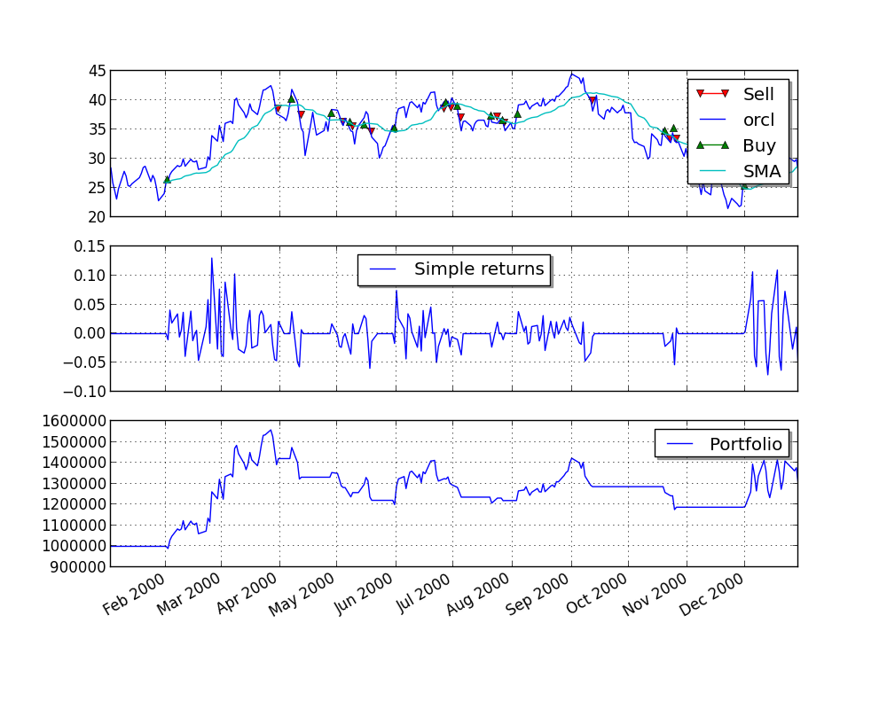

简明教程¶
本教程的目的是让你能够快速入门PyAlgoTrade。 如之前简介中所述，PyAlgoTrade的目标是帮助你测试股票交易策略。 一般而言，如果你有一个交易策略的构思，并且想在历史数据中看看它的表现的话， PyAlgoTrade应该能够给你一些帮助。
感谢要放在最开始——感谢豪尔赫帮助审查初步设计和文档。
本教程是在UNIX下开发的，但是把它调整为windows环境应该是比较简单的。 因为我就是在windows下翻译的。
PyAlgoTrade有6大主要组件:
- Strategies策略
- Feeds数据源
- Brokers经纪商
- DataSeries数据序列
- Technicals指标计算
- Optimizer优化
- Strategies
- 这是你定义的实现交易逻辑的类：何时买、何时卖，等等。
- Feeds
These are data providing abstractions. 例如，你可以使用CSV数据源从一个格式化后的csv(以逗号分割)文件中加载数据推送给策略。
数据源不仅限于bars。例如，可以利用Twitter数据源将Twitter的事件信息转化为交易决策（译者注：事件驱动）。
- Brokers
- 经纪商模块负责执行订单。
- DataSeries
- DataSeries 是用于管理时间序列的抽象类
- Technicals
- 这是你用来对DataSeries进行计算的一组过滤（指标）器。 例如简单移动平均线（SMA）,相对强弱指标(RSI)等. 这些过滤(指标)器被建模为DataSeries 的装饰器。
- Optimizer
- 这是能让你在不同电脑之间、或多进程、或二者结合以加快回测效率的一组类。
说到这里，我们测试策略时需要一些数据，让我们使用以下命令获取甲骨文(Oracle)2000年的数据:
python -c "from pyalgotrade.tools import yahoofinance; yahoofinance.download_daily_bars('orcl', 2000, 'orcl-2000.csv')"
pyalgotrade.tools.yahoofinance 从雅虎金融(Yahoo! Finance)上打包下载格式化后的CSV数据。 文件orcl-2000.csv的格式和内容如下:
Date,Open,High,Low,Close,Volume,Adj Close
2000-12-29,30.87,31.31,28.69,29.06,31655500,28.35
2000-12-28,30.56,31.12,30.37,31.06,25055600,30.30
2000-12-27,30.37,31.06,29.37,30.69,26441700,29.94
.
.
2000-01-04,115.50,118.62,105.00,107.69,116850000,26.26
2000-01-03,124.62,125.19,111.62,118.12,98122000,28.81
让我们从一个简单的策略开始，即在运行过程中只打印收盘价:
from pyalgotrade import strategy
from pyalgotrade.barfeed import yahoofeed
class MyStrategy(strategy.BacktestingStrategy):
def __init__(self, feed, instrument):
strategy.BacktestingStrategy.__init__(self, feed)
self.__instrument = instrument
def onBars(self, bars):
bar = bars[self.__instrument]
self.info(bar.getClose())
# Load the yahoo feed from the CSV file
feed = yahoofeed.Feed()
feed.addBarsFromCSV("orcl", "orcl-2000.csv")
# Evaluate the strategy with the feed's bars.
myStrategy = MyStrategy(feed, "orcl")
myStrategy.run()
- 这段代码主要做了3件事情:(???)
- 声明了一个新的策略，这个策略中只定义了一个方法——onBars,这个方法会在推送的每一个bar执行(???)。
- 从一个CSV文件载入数据源
- 在数据源推送的每根bar上执行策略。
如果你运行了这个脚本，你应该在命令中看到收盘价：
2000-01-03 00:00:00 strategy [INFO] 118.12
2000-01-04 00:00:00 strategy [INFO] 107.69
2000-01-05 00:00:00 strategy [INFO] 102.0
.
.
.
2000-12-27 00:00:00 strategy [INFO] 30.69
2000-12-28 00:00:00 strategy [INFO] 31.06
2000-12-29 00:00:00 strategy [INFO] 29.06
下一步我们实现一个打印SMA价格的策略，用来演示technicals是如何被使用的：
from pyalgotrade import strategy
from pyalgotrade.barfeed import yahoofeed
from pyalgotrade.technical import ma
class MyStrategy(strategy.BacktestingStrategy):
def __init__(self, feed, instrument):
strategy.BacktestingStrategy.__init__(self, feed)
# We want a 15 period SMA over the closing prices.
self.__sma = ma.SMA(feed[instrument].getCloseDataSeries(), 15)
self.__instrument = instrument
def onBars(self, bars):
bar = bars[self.__instrument]
self.info("%s %s" % (bar.getClose(), self.__sma[-1]))
# Load the yahoo feed from the CSV file
feed = yahoofeed.Feed()
feed.addBarsFromCSV("orcl", "orcl-2000.csv")
# Evaluate the strategy with the feed's bars.
myStrategy = MyStrategy(feed, "orcl")
myStrategy.run()
这跟之前的例子很相似，除了：
1、我们在收盘价基础上初始化了一个SMA过滤器（指标）。
2、我们将SMA的值随着收盘价一起打印出来。
运行该脚本后将会看到逐行对应的收盘价和SMA值，但是实际情况是前14行的SMA值是None。
这是因为我们至少需要15个值才能把SMA计算出来：
2000-01-03 00:00:00 strategy [INFO] 118.12 None
2000-01-04 00:00:00 strategy [INFO] 107.69 None
2000-01-05 00:00:00 strategy [INFO] 102.0 None
2000-01-06 00:00:00 strategy [INFO] 96.0 None
2000-01-07 00:00:00 strategy [INFO] 103.37 None
2000-01-10 00:00:00 strategy [INFO] 115.75 None
2000-01-11 00:00:00 strategy [INFO] 112.37 None
2000-01-12 00:00:00 strategy [INFO] 105.62 None
2000-01-13 00:00:00 strategy [INFO] 105.06 None
2000-01-14 00:00:00 strategy [INFO] 106.81 None
2000-01-18 00:00:00 strategy [INFO] 111.25 None
2000-01-19 00:00:00 strategy [INFO] 57.13 None
2000-01-20 00:00:00 strategy [INFO] 59.25 None
2000-01-21 00:00:00 strategy [INFO] 59.69 None
2000-01-24 00:00:00 strategy [INFO] 54.19 94.2866666667
2000-01-25 00:00:00 strategy [INFO] 56.44 90.1746666667
.
.
.
2000-12-27 00:00:00 strategy [INFO] 30.69 29.9866666667
2000-12-28 00:00:00 strategy [INFO] 31.06 30.0446666667
2000-12-29 00:00:00 strategy [INFO] 29.06 30.0946666667
若给定的时间不足以计算，则所有的technicals将返回None。
一件重要的事情是technicals可以进行组合，因为他们作为DataSeries是模块化的。
比如，计算收盘价的RSI再计算RSI的SMA就很简单：
from pyalgotrade import strategy
from pyalgotrade.barfeed import yahoofeed
from pyalgotrade.technical import ma
from pyalgotrade.technical import rsi
class MyStrategy(strategy.BacktestingStrategy):
def __init__(self, feed, instrument):
strategy.BacktestingStrategy.__init__(self, feed)
self.__rsi = rsi.RSI(feed[instrument].getCloseDataSeries(), 14)
self.__sma = ma.SMA(self.__rsi, 15)
self.__instrument = instrument
def onBars(self, bars):
bar = bars[self.__instrument]
self.info("%s %s %s" % (bar.getClose(), self.__rsi[-1], self.__sma[-1]))
# Load the yahoo feed from the CSV file
feed = yahoofeed.Feed()
feed.addBarsFromCSV("orcl", "orcl-2000.csv")
# Evaluate the strategy with the feed's bars.
myStrategy = MyStrategy(feed, "orcl")
myStrategy.run()
运行该脚本，你应该看到在屏幕上有一堆值：
- 前14个RSI值是None。因为我们至少需要15个值来计算RSI。
- 前28个SMA值是None。前14个RSI值是None，SMA过滤器（指标）接收的数据从第15个开始才不是None。我们计算SMA(15)至少需要15个非None值。
2000-01-03 00:00:00 strategy [INFO] 118.12 None None
2000-01-04 00:00:00 strategy [INFO] 107.69 None None
2000-01-05 00:00:00 strategy [INFO] 102.0 None None
2000-01-06 00:00:00 strategy [INFO] 96.0 None None
2000-01-07 00:00:00 strategy [INFO] 103.37 None None
2000-01-10 00:00:00 strategy [INFO] 115.75 None None
2000-01-11 00:00:00 strategy [INFO] 112.37 None None
2000-01-12 00:00:00 strategy [INFO] 105.62 None None
2000-01-13 00:00:00 strategy [INFO] 105.06 None None
2000-01-14 00:00:00 strategy [INFO] 106.81 None None
2000-01-18 00:00:00 strategy [INFO] 111.25 None None
2000-01-19 00:00:00 strategy [INFO] 57.13 None None
2000-01-20 00:00:00 strategy [INFO] 59.25 None None
2000-01-21 00:00:00 strategy [INFO] 59.69 None None
2000-01-24 00:00:00 strategy [INFO] 54.19 23.5673530141 None
2000-01-25 00:00:00 strategy [INFO] 56.44 25.0687519877 None
2000-01-26 00:00:00 strategy [INFO] 55.06 24.7476577095 None
2000-01-27 00:00:00 strategy [INFO] 51.81 23.9690136517 None
2000-01-28 00:00:00 strategy [INFO] 47.38 22.9108539956 None
2000-01-31 00:00:00 strategy [INFO] 49.95 24.980004823 None
2000-02-01 00:00:00 strategy [INFO] 54.0 28.2484181864 None
2000-02-02 00:00:00 strategy [INFO] 54.31 28.505177315 None
2000-02-03 00:00:00 strategy [INFO] 56.69 30.5596770599 None
2000-02-04 00:00:00 strategy [INFO] 57.81 31.5564353751 None
2000-02-07 00:00:00 strategy [INFO] 59.94 33.5111056589 None
2000-02-08 00:00:00 strategy [INFO] 59.56 33.3282358994 None
2000-02-09 00:00:00 strategy [INFO] 59.94 33.7177605915 None
2000-02-10 00:00:00 strategy [INFO] 62.31 36.2205441255 None
2000-02-11 00:00:00 strategy [INFO] 59.69 34.6623493641 29.0368892505
2000-02-14 00:00:00 strategy [INFO] 62.19 37.4284445543 29.9609620198
.
.
.
2000-12-27 00:00:00 strategy [INFO] 30.69 51.3196802735 49.8506368511
2000-12-28 00:00:00 strategy [INFO] 31.06 52.1646203455 49.997518354
2000-12-29 00:00:00 strategy [INFO] 29.06 47.3776678335 50.0790646925
交易¶
现在让我们用一个简单的策略模拟实际的交易，思路很简单：
- 如果复权价格在SMA(15)之上时，我们买入一个多单(我们发出一张买订单).
- 如果我们持有一张多单，当复权价跌破SMA(15)时，我们平多单(我们发出一张卖单).
from pyalgotrade import strategy
from pyalgotrade.barfeed import yahoofeed
from pyalgotrade.technical import ma
class MyStrategy(strategy.BacktestingStrategy):
def __init__(self, feed, instrument, smaPeriod):
strategy.BacktestingStrategy.__init__(self, feed, 1000)
self.__position = None
self.__instrument = instrument
# We'll use adjusted close values instead of regular close values.
self.setUseAdjustedValues(True)
self.__sma = ma.SMA(feed[instrument].getPriceDataSeries(), smaPeriod)
def onEnterOk(self, position):
execInfo = position.getEntryOrder().getExecutionInfo()
self.info("BUY at $%.2f" % (execInfo.getPrice()))
def onEnterCanceled(self, position):
self.__position = None
def onExitOk(self, position):
execInfo = position.getExitOrder().getExecutionInfo()
self.info("SELL at $%.2f" % (execInfo.getPrice()))
self.__position = None
def onExitCanceled(self, position):
# If the exit was canceled, re-submit it.
self.__position.exitMarket()
def onBars(self, bars):
# Wait for enough bars to be available to calculate a SMA.
if self.__sma[-1] is None:
return
bar = bars[self.__instrument]
# If a position was not opened, check if we should enter a long position.
if self.__position is None:
if bar.getPrice() > self.__sma[-1]:
# Enter a buy market order for 10 shares. The order is good till canceled.
self.__position = self.enterLong(self.__instrument, 10, True)
# Check if we have to exit the position.
elif bar.getPrice() < self.__sma[-1] and not self.__position.exitActive():
self.__position.exitMarket()
def run_strategy(smaPeriod):
# Load the yahoo feed from the CSV file
feed = yahoofeed.Feed()
feed.addBarsFromCSV("orcl", "orcl-2000.csv")
# Evaluate the strategy with the feed.
myStrategy = MyStrategy(feed, "orcl", smaPeriod)
myStrategy.run()
print(("Final portfolio value: $%.2f" % myStrategy.getBroker().getEquity()))
run_strategy(15)
运行该脚本，你将看到跟下面类似的东西:
2000-01-26 00:00:00 strategy [INFO] BUY at $27.26
2000-01-28 00:00:00 strategy [INFO] SELL at $24.74
2000-02-03 00:00:00 strategy [INFO] BUY at $26.60
2000-02-22 00:00:00 strategy [INFO] SELL at $28.40
2000-02-23 00:00:00 strategy [INFO] BUY at $28.91
2000-03-31 00:00:00 strategy [INFO] SELL at $38.51
2000-04-07 00:00:00 strategy [INFO] BUY at $40.19
2000-04-12 00:00:00 strategy [INFO] SELL at $37.44
2000-04-19 00:00:00 strategy [INFO] BUY at $37.76
2000-04-20 00:00:00 strategy [INFO] SELL at $35.45
2000-04-28 00:00:00 strategy [INFO] BUY at $37.70
2000-05-05 00:00:00 strategy [INFO] SELL at $35.54
2000-05-08 00:00:00 strategy [INFO] BUY at $36.17
2000-05-09 00:00:00 strategy [INFO] SELL at $35.39
2000-05-16 00:00:00 strategy [INFO] BUY at $37.28
2000-05-19 00:00:00 strategy [INFO] SELL at $34.58
2000-05-31 00:00:00 strategy [INFO] BUY at $35.18
2000-06-23 00:00:00 strategy [INFO] SELL at $38.81
2000-06-27 00:00:00 strategy [INFO] BUY at $39.56
2000-06-28 00:00:00 strategy [INFO] SELL at $39.42
2000-06-29 00:00:00 strategy [INFO] BUY at $39.41
2000-06-30 00:00:00 strategy [INFO] SELL at $38.60
2000-07-03 00:00:00 strategy [INFO] BUY at $38.96
2000-07-05 00:00:00 strategy [INFO] SELL at $36.89
2000-07-21 00:00:00 strategy [INFO] BUY at $37.19
2000-07-24 00:00:00 strategy [INFO] SELL at $37.04
2000-07-26 00:00:00 strategy [INFO] BUY at $35.93
2000-07-28 00:00:00 strategy [INFO] SELL at $36.08
2000-08-01 00:00:00 strategy [INFO] BUY at $36.11
2000-08-02 00:00:00 strategy [INFO] SELL at $35.06
2000-08-04 00:00:00 strategy [INFO] BUY at $37.61
2000-09-11 00:00:00 strategy [INFO] SELL at $41.34
2000-09-29 00:00:00 strategy [INFO] BUY at $39.07
2000-10-02 00:00:00 strategy [INFO] SELL at $38.30
2000-10-20 00:00:00 strategy [INFO] BUY at $34.71
2000-10-31 00:00:00 strategy [INFO] SELL at $31.34
2000-11-20 00:00:00 strategy [INFO] BUY at $23.35
2000-11-21 00:00:00 strategy [INFO] SELL at $23.83
2000-12-01 00:00:00 strategy [INFO] BUY at $25.33
2000-12-21 00:00:00 strategy [INFO] SELL at $26.72
2000-12-22 00:00:00 strategy [INFO] BUY at $29.17
Final portfolio value: $979.44
如果我们用30替代15来作为SMA的参数会怎样？绩效会变好还是变坏？ 我们很确定可以通过以下方法来验证：
for i in range(10, 30):
run_strategy(i)
我们会发现，使用SMA(20)后能得到更好的回报:
Final portfolio value: $1075.38
我们只是尝试了一组有限的参数组，看起来没有什么问题。如果我们需要测试一个有多个参数的策略怎么办？
使用串行计算就不会让策略变得更复杂。
优化¶
了解优化组件后，优化会变得非常简单：
- 有一个服务负责:
- 提供策略运行所需的bars。
- 提供策略运行所需的参数。
- 记录来自每个工作过程的交易记录结果。
- 并且有多个工作过程负责:
- 在由服务提供的参数、K线基础上运行策略。
我们使用一个名为RSI2的策略来说明上述架构(http://stockcharts.com/school/doku.php?id=chart_school:trading_strategies:rsi2), 它需要以下参数:
- entrySMA：一个SMA趋势识别的长度。参数范围[150 ~ 250]。
- exitSMA：一个较短的SMA出场点长度。参数范围[5~10]。
- rsiPeriod：多空入场点。参数范围[2 ~ 10]。
- overSoldThreshold：RSI多单平仓点。参数范围[5 ~ 25]。
- overBoughtThreshold：RSI空单平仓点。参数范围[75 ~ 95]。
如果我没算错的话——你的意思是数学是体育老师教的？？————这将有4409559个参数组合。
我这里测试其中一个参数组的时间大约0.16秒，估计需要8.5天才能要运行完整个参数组合然后找到最优参数。时间太长了。如果我能有10台8核的机器同时进行优化，那么时间将缩短到2.5小时。
长话短说, 我们需要并行计算.
我们先下载道琼斯工业指数3年的日线数据:
python -c "from pyalgotrade.tools import yahoofinance; yahoofinance.download_daily_bars('dia', 2009, 'dia-2009.csv')"
python -c "from pyalgotrade.tools import yahoofinance; yahoofinance.download_daily_bars('dia', 2010, 'dia-2010.csv')"
python -c "from pyalgotrade.tools import yahoofinance; yahoofinance.download_daily_bars('dia', 2011, 'dia-2011.csv')"
保存以下代码到rsi2.py:
from pyalgotrade import strategy
from pyalgotrade.technical import ma
from pyalgotrade.technical import rsi
from pyalgotrade.technical import cross
class RSI2(strategy.BacktestingStrategy):
def __init__(self, feed, instrument, entrySMA, exitSMA, rsiPeriod, overBoughtThreshold, overSoldThreshold):
strategy.BacktestingStrategy.__init__(self, feed)
self.__instrument = instrument
# We'll use adjusted close values, if available, instead of regular close values.
if feed.barsHaveAdjClose():
self.setUseAdjustedValues(True)
self.__priceDS = feed[instrument].getPriceDataSeries()
self.__entrySMA = ma.SMA(self.__priceDS, entrySMA)
self.__exitSMA = ma.SMA(self.__priceDS, exitSMA)
self.__rsi = rsi.RSI(self.__priceDS, rsiPeriod)
self.__overBoughtThreshold = overBoughtThreshold
self.__overSoldThreshold = overSoldThreshold
self.__longPos = None
self.__shortPos = None
def getEntrySMA(self):
return self.__entrySMA
def getExitSMA(self):
return self.__exitSMA
def getRSI(self):
return self.__rsi
def onEnterCanceled(self, position):
if self.__longPos == position:
self.__longPos = None
elif self.__shortPos == position:
self.__shortPos = None
else:
assert(False)
def onExitOk(self, position):
if self.__longPos == position:
self.__longPos = None
elif self.__shortPos == position:
self.__shortPos = None
else:
assert(False)
def onExitCanceled(self, position):
# If the exit was canceled, re-submit it.
position.exitMarket()
def onBars(self, bars):
# Wait for enough bars to be available to calculate SMA and RSI.
if self.__exitSMA[-1] is None or self.__entrySMA[-1] is None or self.__rsi[-1] is None:
return
bar = bars[self.__instrument]
if self.__longPos is not None:
if self.exitLongSignal():
self.__longPos.exitMarket()
elif self.__shortPos is not None:
if self.exitShortSignal():
self.__shortPos.exitMarket()
else:
if self.enterLongSignal(bar):
shares = int(self.getBroker().getCash() * 0.9 / bars[self.__instrument].getPrice())
self.__longPos = self.enterLong(self.__instrument, shares, True)
elif self.enterShortSignal(bar):
shares = int(self.getBroker().getCash() * 0.9 / bars[self.__instrument].getPrice())
self.__shortPos = self.enterShort(self.__instrument, shares, True)
def enterLongSignal(self, bar):
return bar.getPrice() > self.__entrySMA[-1] and self.__rsi[-1] <= self.__overSoldThreshold
def exitLongSignal(self):
return cross.cross_above(self.__priceDS, self.__exitSMA) and not self.__longPos.exitActive()
def enterShortSignal(self, bar):
return bar.getPrice() < self.__entrySMA[-1] and self.__rsi[-1] >= self.__overBoughtThreshold
def exitShortSignal(self):
return cross.cross_below(self.__priceDS, self.__exitSMA) and not self.__shortPos.exitActive()
这是服务器脚本:
import itertools
from pyalgotrade.barfeed import yahoofeed
from pyalgotrade.optimizer import server
def parameters_generator():
instrument = ["dia"]
entrySMA = list(range(150, 251))
exitSMA = list(range(5, 16))
rsiPeriod = list(range(2, 11))
overBoughtThreshold = list(range(75, 96))
overSoldThreshold = list(range(5, 26))
return itertools.product(instrument, entrySMA, exitSMA, rsiPeriod, overBoughtThreshold, overSoldThreshold)
# The if __name__ == '__main__' part is necessary if running on Windows.
if __name__ == '__main__':
# Load the feed from the CSV files.
feed = yahoofeed.Feed()
feed.addBarsFromCSV("dia", "dia-2009.csv")
feed.addBarsFromCSV("dia", "dia-2010.csv")
feed.addBarsFromCSV("dia", "dia-2011.csv")
# Run the server.
server.serve(feed, parameters_generator(), "localhost", 5000)
服务器脚本做了3件事:
- 声明一个生成器函数，这个函数可以根据参数范围为策略生成参数组合。
- 从我们下载的CSV文件载入数据源。
- 运行服务端并在端口5000上等待连接。
This is the worker script that uses the pyalgotrade.optimizer.worker module to run the strategy in parallel with the data supplied by the server:
from pyalgotrade.optimizer import worker
import rsi2
# The if __name__ == '__main__' part is necessary if running on Windows.
if __name__ == '__main__':
worker.run(rsi2.RSI2, "localhost", 5000, workerName="localworker")
当您运行服务器和客户端时，您会看到在服务器控制台上看到的类似下面的内容：
2014-05-03 15:04:01,083 server [INFO] Loading bars
2014-05-03 15:04:01,348 server [INFO] Waiting for workers
2014-05-03 15:04:58,277 server [INFO] Partial result 1242173.28754 with parameters: ('dia', 150, 5, 2, 91, 19) from localworker
2014-05-03 15:04:58,566 server [INFO] Partial result 1203266.33502 with parameters: ('dia', 150, 5, 2, 81, 19) from localworker
2014-05-03 15:05:50,965 server [INFO] Partial result 1220763.1579 with parameters: ('dia', 150, 5, 3, 83, 24) from localworker
2014-05-03 15:05:51,325 server [INFO] Partial result 1221627.50793 with parameters: ('dia', 150, 5, 3, 80, 24) from localworker
.
.
在客户机控制台可以看到下面的内容:
2014-05-03 15:02:25,360 localworker [INFO] Running strategy with parameters ('dia', 150, 5, 2, 84, 15)
2014-05-03 15:02:25,377 localworker [INFO] Running strategy with parameters ('dia', 150, 5, 2, 94, 5)
2014-05-03 15:02:25,661 localworker [INFO] Result 1090481.06342
2014-05-03 15:02:25,661 localworker [INFO] Result 1031470.23717
2014-05-03 15:02:25,662 localworker [INFO] Running strategy with parameters ('dia', 150, 5, 2, 93, 25)
2014-05-03 15:02:25,665 localworker [INFO] Running strategy with parameters ('dia', 150, 5, 2, 84, 14)
2014-05-03 15:02:25,995 localworker [INFO] Result 1135558.55667
2014-05-03 15:02:25,996 localworker [INFO] Running strategy with parameters ('dia', 150, 5, 2, 93, 24)
2014-05-03 15:02:26,006 localworker [INFO] Result 1083987.18174
2014-05-03 15:02:26,007 localworker [INFO] Running strategy with parameters ('dia', 150, 5, 2, 84, 13)
2014-05-03 15:02:26,256 localworker [INFO] Result 1093736.17175
2014-05-03 15:02:26,257 localworker [INFO] Running strategy with parameters ('dia', 150, 5, 2, 84, 12)
2014-05-03 15:02:26,280 localworker [INFO] Result 1135558.55667
.
.
注意！！你只能运行一个服务器和一个或者多个客户机。。译者补充：这里说的是同一个优化项目下只能运行一个服务器。
如果你只想在自己的电脑上对策略并行计算，你可以利用 pyalgotrade.optimizer.local 模块来实现：
import itertools
from pyalgotrade.optimizer import local
from pyalgotrade.barfeed import yahoofeed
import rsi2
def parameters_generator():
instrument = ["dia"]
entrySMA = list(range(150, 251))
exitSMA = list(range(5, 16))
rsiPeriod = list(range(2, 11))
overBoughtThreshold = list(range(75, 96))
overSoldThreshold = list(range(5, 26))
return itertools.product(instrument, entrySMA, exitSMA, rsiPeriod, overBoughtThreshold, overSoldThreshold)
# The if __name__ == '__main__' part is necessary if running on Windows.
if __name__ == '__main__':
# Load the feed from the CSV files.
feed = yahoofeed.Feed()
feed.addBarsFromCSV("dia", "dia-2009.csv")
feed.addBarsFromCSV("dia", "dia-2010.csv")
feed.addBarsFromCSV("dia", "dia-2011.csv")
local.run(rsi2.RSI2, feed, parameters_generator())
上述代码做了3件事:
- 声明一个生成器函数，这个函数可以根据参数范围为策略生成参数组合。
- 从我们下载的CSV文件载入数据源。
- 通过 pyalgotrade.optimizer.local 模块运行策略并寻优。
当你执行这段代码后，你可以看到类似下面的结果:
2014-05-03 15:08:06,587 server [INFO] Loading bars
2014-05-03 15:08:06,910 server [INFO] Waiting for workers
2014-05-03 15:08:58,347 server [INFO] Partial result 1242173.28754 with parameters: ('dia', 150, 5, 2, 91, 19) from worker-95583
2014-05-03 15:08:58,967 server [INFO] Partial result 1203266.33502 with parameters: ('dia', 150, 5, 2, 81, 19) from worker-95584
2014-05-03 15:09:52,097 server [INFO] Partial result 1220763.1579 with parameters: ('dia', 150, 5, 3, 83, 24) from worker-95584
2014-05-03 15:09:52,921 server [INFO] Partial result 1221627.50793 with parameters: ('dia', 150, 5, 3, 80, 24) from worker-95583
2014-05-03 15:10:40,826 server [INFO] Partial result 1142162.23912 with parameters: ('dia', 150, 5, 4, 76, 17) from worker-95584
2014-05-03 15:10:41,318 server [INFO] Partial result 1107487.03214 with parameters: ('dia', 150, 5, 4, 83, 17) from worker-95583
.
.
- 在记录中，最优结果为 $2314.40 ,它的参数组是:
- entrySMA: 154
- exitSMA: 5
- rsiPeriod: 2
- overBoughtThreshold: 91
- overSoldThreshold: 18
绘图¶
PyAlgoTrade可以很容易的对策略运行进行绘图。
保存为 sma_crossover.py:
from pyalgotrade import strategy
from pyalgotrade.technical import ma
from pyalgotrade.technical import cross
class SMACrossOver(strategy.BacktestingStrategy):
def __init__(self, feed, instrument, smaPeriod):
strategy.BacktestingStrategy.__init__(self, feed)
self.__instrument = instrument
self.__position = None
# We'll use adjusted close values instead of regular close values.
self.setUseAdjustedValues(True)
self.__prices = feed[instrument].getPriceDataSeries()
self.__sma = ma.SMA(self.__prices, smaPeriod)
def getSMA(self):
return self.__sma
def onEnterCanceled(self, position):
self.__position = None
def onExitOk(self, position):
self.__position = None
def onExitCanceled(self, position):
# If the exit was canceled, re-submit it.
self.__position.exitMarket()
def onBars(self, bars):
# If a position was not opened, check if we should enter a long position.
if self.__position is None:
if cross.cross_above(self.__prices, self.__sma) > 0:
shares = int(self.getBroker().getCash() * 0.9 / bars[self.__instrument].getPrice())
# Enter a buy market order. The order is good till canceled.
self.__position = self.enterLong(self.__instrument, shares, True)
# Check if we have to exit the position.
elif not self.__position.exitActive() and cross.cross_below(self.__prices, self.__sma) > 0:
self.__position.exitMarket()
保存这段代码到另外一个文件:
from pyalgotrade import plotter
from pyalgotrade.barfeed import yahoofeed
from pyalgotrade.stratanalyzer import returns
import sma_crossover
# Load the yahoo feed from the CSV file
feed = yahoofeed.Feed()
feed.addBarsFromCSV("orcl", "orcl-2000.csv")
# Evaluate the strategy with the feed's bars.
myStrategy = sma_crossover.SMACrossOver(feed, "orcl", 20)
# Attach a returns analyzers to the strategy.
returnsAnalyzer = returns.Returns()
myStrategy.attachAnalyzer(returnsAnalyzer)
# Attach the plotter to the strategy.
plt = plotter.StrategyPlotter(myStrategy)
# Include the SMA in the instrument's subplot to get it displayed along with the closing prices.
plt.getInstrumentSubplot("orcl").addDataSeries("SMA", myStrategy.getSMA())
# Plot the simple returns on each bar.
plt.getOrCreateSubplot("returns").addDataSeries("Simple returns", returnsAnalyzer.getReturns())
# Run the strategy.
myStrategy.run()
myStrategy.info("Final portfolio value: $%.2f" % myStrategy.getResult())
# Plot the strategy.
plt.plot()
上述代码做了3件事:
- 从一个CSV文件中加载数据源。
- 通过数据源提供的bar逐根运行策略；提供一个策略绘图程序。
- 绘制策略图形。
图形如下:
我希望你能喜欢这份简明教程. 同时提醒你下载地址在这里: http://gbeced.github.io/pyalgotrade/downloads/index.html
开始编写你自己的策略吧！
你可以在 策略例子 找到更多的例子.